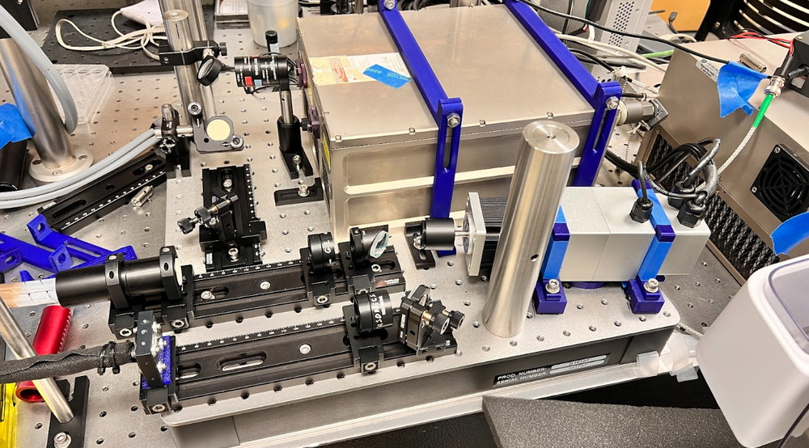

Robot Learning with Bimanual Arms for Carbon Fiber Layup Automation
WEIRD Lab, University of Washington · Robot Learning Researcher · Jan 2026 – present
Carbon fiber layup automation with a dexterous bimanual robot.

I've enjoyed developing fullstack robotics pipelines.
Currently at UW's WEIRD Lab, supervised by PI Abhishek Gupta, I work on automating carbon fiber layup using bimanual arms, building the end-to-end system and developing the learning algorithms behind it.
WEIRD Lab, University of Washington · Robot Learning Researcher · Jan 2026 – present
Carbon fiber layup automation with a dexterous bimanual robot.
Amazon Robotics · Robotics Data Scientist Intern · Sep – Dec 2025
Explored perception inconsistency metrics to improve ML pipelines and the overall robotic system.
UW Sun Lab · Systems Engineering & Machine Learning Research Assistant · Amazon Robotics Research Fellow · Sep 2024 – Apr 2025


Automated a self-driving lab environment for materials discovery.
uWAMIT, UW Molecular Imaging & Therapy Center, with GE HealthCare · Mechanical Design & Mechatronics Researcher · Jun 2024 – Mar 2025



Adapted a GE HealthCare VE95 clinical scanner for portable photoacoustic-ultrasound imaging.
Mechanical design, mechatronics, and systems engineering from before the robot-learning focus. Kept for reference; click through for the full write-ups.